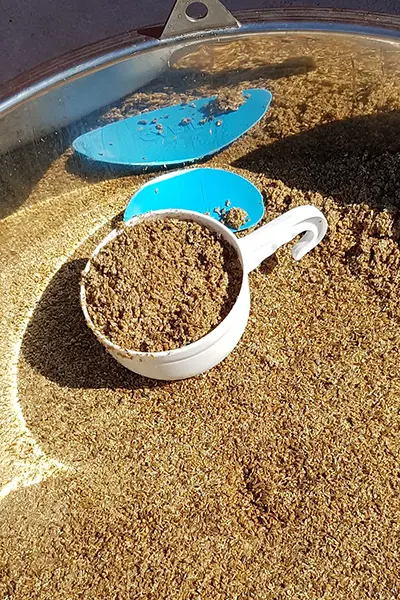

Bière d’altitude
Tous les week-ends, nous organisons des stages d’initiation au brassage de la bière.
 Notre orgeLa Storia allie 3 activités interdépendantes, d’un côté la culture d’orge brassicole, de l'autre la transformation de cette orge en bière, sans oublier l’élevage bovins. L’eau et le malt sont les matières premières indispensables pour brasser une bière. La ferme dispose d’une eau montagneuse et elle produit elle-même son orge. Quand l’orge est récoltée, elle part en Auvergne pour qu’elle soit transformée en malt à la Malterie des Volcans. Le malt est un grain dans lequel il y a plus de sucre qu’en temps normal grâce à une transformation physique. C’est ce sucre que nous allons mettre en valeur dans un brassage. Les bières La Storia sont toutes produites à 1100m d’altitude dans notre brasserie. Cette dernière a été modernisée l’été 2020 pour soulager les brasseurs dans leur travail. Depuis ce jour, Valérie et son assistant sont chargés de la production des 8 bières La Storia. Ils veillent au bon déroulement du brassage, de l'empâtage à la fermentation. Le but est de prendre soin du matériel, tout en respectant les recettes établies par Valérie.
Si vous voulez participer à la confection d'un brassin de A à Z, dans les règles de l'art et suivant nos méthodes biologiques*.
Vous pouvez vous inscrire grâce au formulaire ci-dessous
*Vous n'aurez quand même pas tous nos secrets !